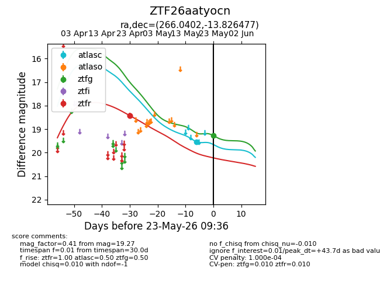
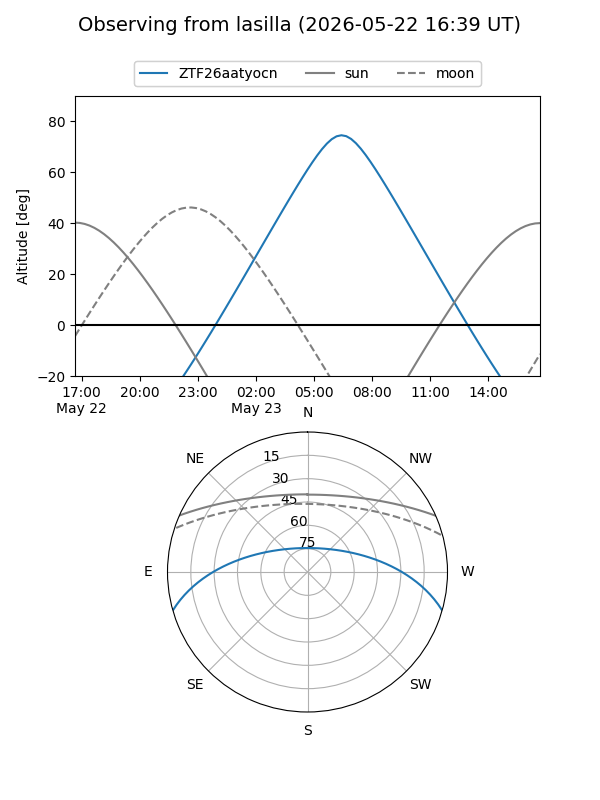
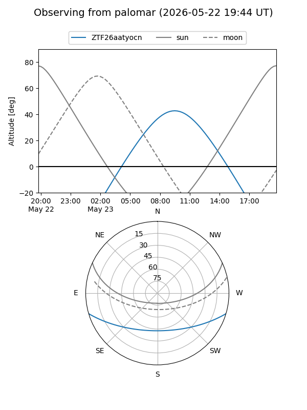
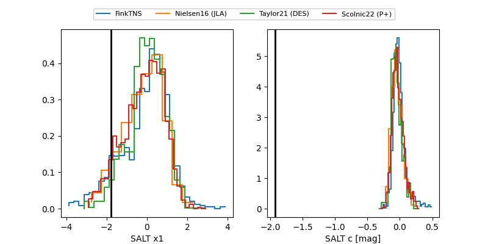

ZTF26aatyocn
Target ZTF26aatyocn at 2026-05-23 09:37
Aliases and brokers:
lsst-FINK: link
lsst-Lasair: link
lsst-ALeRCE: link
ztf-FINK: link
ztf-Lasair: link
ztf-ALeRCE: link
alt names
ZTF26aatyocn (ztf,fink_ztf)
Coordinates:
equatorial (ra, dec) = 266.0402,-13.82648
equatorial (HMS+DMS) = 17:44:09.64,-13:49:35.32
galactic (l, b) = (12.7957,+8.11082)
Flags:
likely cv: !
Photometry:
last atlasc=19.54, ztfg=19.27, ztfr=18.42
1 atlasc, 1 ztfg, 2 ztfr detections
Lightcurve

Visibility


Additional plots
